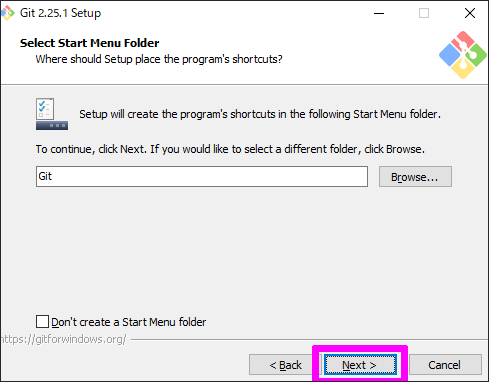
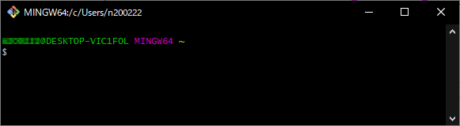

Git のインストール時に、たくさんのオプションがあってよく分からなかったので、まとめました。
神経質でない方は、気にせず「次へ」ボタンを押していけば普通に使えるようになりますが、気になる人は目を通しておいたいいかもしれません。
インストール
まず初めに、公式サイト から「Git-2.25.1-64-bit.exe」をダウンロードします。
ダウンロードした「Git-2.25.1-64-bit.exe」を実行してインストールを開始します。
Information (情報)

一番最初、目に飛び込んでくる文字が「GNU General Public License」です。
Git ソフトのライセンス体系を書いた文章ですね。要約すると、このソフトでお金儲けをしないでねっと言った感じのことが書かれています。
Select Destination Location (インストール先の選択)
これは見て分かる通り、インストール先を指定する画面です。
基本的に、インストールするソフトは Cドライブの「Program Files」に入れます。
他のフォルダにインストールするとバグの原因になるので、特別な理由が無い限り変えないことをオススメします。
Select Components (コンポーネントの選択)
この辺りからややこしくなってきます。
Additional icons と On the Desktop
デスクトップに Git のショートカットアイコンを追加します。要らないのでチェックは無しです。
Windows Explorer integration
フォルダ内を右クリックした時に表示される右クリックメニューに「Git Bash Here」と「Git GUI Here」を追加します。
右クリックメニューの「Git Bash Here」から Git コンソールを開くと、パスがその時のフォルダーになっているので、作業が楽になります。
Git LFS (Large File Support)
大容量ファイルをサポートします。チェックして置きましょう。
Associate .git* configuration files with the default text editor
git 構成ファイルをデフォルトのテキストエディターに関連付けます。普通に使っていれば要らない機能なので、チェックを外してもいい。
Associate .sh files to be run with Bash
Bash で実行する shファイルを Git コンソールに関連付けます。shファイル をダブルクリックするだけで、Git コンソールでスクリプト実行ができるようになります。便利。
Use a TrueType font in all console windows
すべてのコンソールウィンドウで TrueTypeフォント が使われるようになります。文字がキレイになるよ。
Check daily for Git for Windows updates
更新プログラムを毎日確認します。脆弱性の修正とかあるかもですし、最新版を常に使いたい人はチェックを入れておきましょう。
Select Start Menu Folder (スタートメニューフォルダの選択)

スタートメニュー内に Git フォルダを作って、Git コンソールをすぐに開けるようにしてくれます。余計なお世話。
右クリックメニューから Git コンソールを開けるので正直要らない。その場合は「Don’t create a Start Menu folder」にチェックを入れます。
Choosing the default editor used by Git (デフォルトエディッターの選択)
Which editor would you like Git to use?
Git で使用するエディターを選択します。
いつ必要になるか分からないですが、好きなエディッターを選択して置きます。
Adjusting your PATH environment (PATHの設定)
How would you like to use Git from the command line?

コマンドラインから Git をどのように使う予定ですか？
Use Git from Git Bash only
Git Bash のみで使う場合はこれ選択します。限定的な使い方をする人向けかな。
Git from the command line and also from 3rd-party software
Windows のコマンドプロンプトや、PowerShell、その他のツールから Git を使う場合はこれを選択します。こいつを選んでおけば間違いなし。
Use Git and optional Unix tools from the Command Prompt
UNIX 系ツールを使う予定がある場合はこれを選択します。上級者向け。
Choosing HTTPS transport backend (HTTPSトランスポートの設定)
Which SSL/TLS library would you like Git to use for HTTPS connections?
GitでHTTPS接続に使用するSSL / TLSライブラリはどれですか？
Use the OpenSSL library
個人で使う場合や特別な指示が無い場合はこっちを選択します。
Use the native Windows Secure Channel library
社内のルートCA証明書を使用する場合はこっちを選択します。
Configuring the line ending conbersions (行末の変換設定)
How should Git treat line endings in text files?
テキストファイルの末尾は、どのように処理したらいいですか？
Checkout Windows-style, commit Unix-style line endings
ファイルを引っ張ってくる時は Windowsスタイルにし、ファイルを上げる時は UNIXスタイルにする。
Git が良きに計らってくれます。
Checkout as-is, commit Unix-style line endings
ファイルを引っ張ってくる時は そのまま、ファイルを上げる時は UNIXスタイルにする。
Checkout as-is, commit as-is
ファイルを引っ張ってくる時もファイルを上げる時もそのまま。
Configuring the terminal emulator to use with Git Bash (ターミナルの設定)
Which terminal emulator do you want to use with your Git Bash?
Git Bashで使用するターミナルエミュレータはどれですか？
Use MinTTY (the default terminal of MSYS2)
MinTTY を使う。

Use Windows’ default console window
Windows コンソール を使う。

Configuring extra options (追加オプションの設定)
Which features would you like to enable?
Enable file system caching
ファイルシステム キャッシュ を有効にする場合は、チェックを入れる。
Enable Git Credential Manager
Git Credential Manager を有効にする場合は、チェックを入れる。
Enable symbolic links
シンボリックリンク を有効にする場合は、チェックを入れる。
おわりに
設定は以上になります。
普通に使う分には気にせずインストールしても大丈夫だと思います。
少しでも余分な機能を排除したいって方は、じっくりと選別して下さい。
お疲れさまでした。